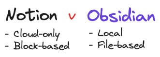

The past three posts were all written somewhat simultaneously. I assumed you’d enjoy 3 long posts more than one giant one.
To Cloud or Not to Cloud, that is the Question
Here’s a topic I’ve continually waffled on: is it better to live in the cloud or on local machines? There are, of course, pros and cons with any sort of decision. Every so often I like to reweigh decisions I’ve made. Now is one of those times.
The Cloud
The “cloud” isn’t a cloud. It’s not even that complicated in theory, so the fact the name “the cloud” caught on is a bit strange to me. Your data in “the cloud” is actually just in a computer (or several) that is somewhere else in the world. I’ve been in these building before. They are often nondescript building hiding in plain sight amongst other businesses. Inside of them there are a series of aisles like you’d see at a grocery store, except all of the shelves are filled with rack-mounted computers.
The app you’re using knows where your data is. When your app makes a request for that picture you took yesterday, it goes through a series of computers that do lookups and authentication/authorization steps, finds the closest computer that has the file, then returns that file in response to your request.
Boom the cloud.
Why Think about It?
On a long enough timeline, the survival rate of any digital resource you depend on will drop to zero. I dumped a lot of energy and effort into Google Tasks, only to have that killed. I advocated for Google+, only to have that shuttered. Suddenly I started looking at my website, which was hosted in Blogger, and decided I shouldn’t hold my breath. While it is easy (and justified) to single out Google here - they are by no means the only potential issue here. Reddit, a key backbone of information gathering for me, has made some wildly questionable decisions recently. When their site effectively went dark, I realized how locked-in to that mode of operating I was. One of my tried-and-true workflows ceased to produce results for reasons I had no control over.
The Notion Problem
I love Notion. Around 4 years ago I started transitioning more and more of my daily life into a system with Notion as the backbone. It’s a stellar app that takes a great concept, the “block”, and builds on it extensively with all sorts of features that maintain its core conceptual integrity. It feels like every design decision was made with such love and care… and yet there’s nothing in the terms of service1 that says “WE GUARANTEE TO STILL BE AROUND TOMORROW”.
Why is the Cloud Popular?
Since the cloud is just “some else’s computer”, how much of your life are you trusting to this faceless group of people? Your photos, once they leave your phone and go to the cloud, are not yours any more. If they were suddenly deleted, or you were locked from your account, that’s pretty much it. They are just gone.
And yet, a huge portion of modern tech lives in “the cloud”. Think about how “useful” your phone feels when it doesn’t have service.
So why?
Well, basically that’s just the way the industry is moving. There are a litany of reasons, mostly boring ones - but it boils down to “the cloud” easier on consumers and easier on developers. There’s nothing simpler than taking a photo on your phone, then looking at it on Google Photos 2 minutes later on your laptop. You’re not installing a chat app on your machine, you’re going to Facebook. You’re not renting DVDs anymore. You’re clicking a button. There’s nothing simpler for a developer to write some little app and have it hosted on AWS, Firebase, or Azure (just to name a few).
Local
Local is just what it sounds like: using the computer in front of you. Using the machine in your hand. Your phones’s built-in calculator doesn’t call back to Apple HQ or Google to ask what 2+2 is. That’s done on-device. Your computer can do a ton of things, and yet more and more we are delegating those tasks to someone else’s.
Apple versus Google
There is an interesting dichotomy afoot when it comes to the two most talked about tech companies - Google and Apple have completely opposing business incentives and company ethos.
It serves Google’s interests to move as many people as fully to the cloud as possible; and they can make an ethical argument that by doing so they’ve very successfully lowered the barrier-to-entry to all sorts of capabilities and features. You no longer have to but $1000 machine and a multi-hundred dollar license to install Microsoft Office, you just need a cheap-as-dirt Chromebook and access to docs.google.com. Google’s business model incentivizes them to make it as easy and desireable as possible to put as much of your life in the cloud as possible.
It serves Apple’s interests to move as many people as fully to using their on-device operations as possible; and they can make an ethical argument that by doing so they’ve advocated for your privacy. They’ve kept your data yours. They are offering the best-in-class products and don’t need to bog down your experience with advertisements… they just need you to replace your aging hardware with a fresh new iWhatever every couple of years. Apple’s business model incentivizes them to make it as easy and desireable as possible to put as much of your life in your physical Apple devices as possible.
Advantages of Local
Local compute offers a number of advantages.
- It works without an internet connection
- Privacy - nobody needs to know how many Darkwing Duck revival scripts I’ve been writing2 but me
- It can be faster, no matter how quick your internet connection is, there are certain situations where reading from your local disk will provide better performance
- Durability - so long as I have a copy of my file on my machine and on another trusted local device, it’s probably going anywhere
Drawbacks of Local
There are many reasons why “the cloud” is better a better paradigm. This is an incomplete list.
- I have accidentally killed my own files before. I’ve never once had Google just “lose” One of my files. If I dropped my Chromebook out a moving car window, no big deal!
- The cloud becomes your single source of truth. When you have a federated file system and each device is equally entitled to be “the source of truth”, you run into sync issues. This opens up multiple new failure points. Sync issues become much more frequent if each device you own claims equal right to having “the correct version” of a thing.
- Honestly, setting up my Alexa-enabled devices has been easier and worked more consistently than setting up my HomeKit devices.
So What
There are certain things that I no longer want to be dependent on “the cloud” for survival:
- My personal memories - photos, videos, life-tracking data
- My body of permanent notes
There are another category of things I no longer want going to “the cloud” at all:
- My smart home stuff, like all of it.
I’m going to take some proactive steps to be less dependent on invisible machines in hot rooms scattered throughout the globe.
- DONE:
- Migrating my website off Blogger to something that lives on my hard drive & is pushed to the cloud (some several years back)
- Procuring a Network-Attached Storage device, for an added degree of freedom in redundancy handling
- Migrating my personal body of Permanent Notes from Notion to a local, dedicated, markdown-based personal knowledge management application
- IN PROCESS:
- Developing a local-first version of my “Personal Data Warehouse”
- Developing a platform-agnostic framework for my Columns, and probably moving this website to a new framework
- SOON:
- Creating quarterly local backups of my Google Photos
- EVENTUALLY/MAYBE:
- Move away from cloud-first smart home products
Notion → Obsidian
I pulled the trigger on moving my notes off Notion to the best alternative, Obsidian.

How
I used a bulk export of my “Notes” database from Notion to Markdown & CSV. This is great and honestly gets you 90% of the way there, but does come with some caveats/annoyances. Every file includes the 16-character UUID that uniquely identified the block, for example. I used this script to handle some immediate, obvious cleanup activities; but that script doesn’t handle some specific things I needed for my use. Thankfully I have a superpower and wrote 180 lines of JavaScript of my own to do things like move data from the Frontmatter to the body of the notes, handle some remaining cleanup, and enforce some formatting.
Niceties of Obsidian over Notion for Permanent Notes
Notion is a Swiss Army knife, a multi-tool. It’s a damn good one - probably the best - but like all multi-tools, each of their individual functions just aren’t quite as good as a tool designed specially for the job. Obsidian’s bread and butter is exactly my use case. Square peg, square hole. Here are some nice features:
- Note aliases - I have lived with some weird English in Notion when I’m using a Note’s title in a sentence where it doesn’t really fit. Now I don’t have to decide if the note should be the acronym or the full phrase - it can be both.
- Code-friendly - I am able to write code to iterate through my notes & do things to them.
- Unlinked-mentions - Obsidian can recognize if a note is mentioned in another note, but not linked to it
- Graph View - everyone who builds a network of notes loves seeing it.
- Excalidraw - that white boarding app I said I’d love to use, well it’s very nicely integrated in.
Life
My next post won’t be about tech stuff. Promise (cause I’ve already written a lot of it).
Top 5: Factors to weigh when deciding on whether or not to use the Cloud
5. Do you have the option?
Honestly lots of great things are only local or only in the Cloud. There is not a local version of Notion. I know. I’ve checked. Also there’s not a cloud-based video editor that’s as easy to use as what’s on this computer.
4. Do you care if others see what you’re doing?
Cause they will. Unless you’re using end-to-end encryption, which is implemented by them and something you’re just going to have to trust that they did a good job of.
3. How badly will you want to access the thing in 10 years?
Of all the cloud services I can think of, there are only few that I’d wager will be around in a not-too-dissimilar-form in 10 years. If you care about it deeply, your best bet is probably to have both local and cloud-based copies of the thing. That’s what I do for most of my stuff.
2. How many different devices do you need to access this information from?
If you only have a phone, it’s pretty easy to just let your photos live in your phone3 and always have them in the device you’re using. If you’ve got a gross number of devices like me, dropping a task on one device and picking it up on another becomes more and more common. This tends to favor cloud-based workflows, as much as Apple would love for iCloud’s file syncronization to be magically seamless, it’s just not.
1. Are you willing to live with more subscriptions?
Everything is a subscription now. I understand the need for an enduring revenue stream. I write code for goodness sake… but some tools are just so basic that they realistically could be considered “done”. Finito. Charge once and never update your app again.
Quote:
BLAZING FAST. ULTRA SECURE. CRAZY SIMPLE. Every cloud service provider